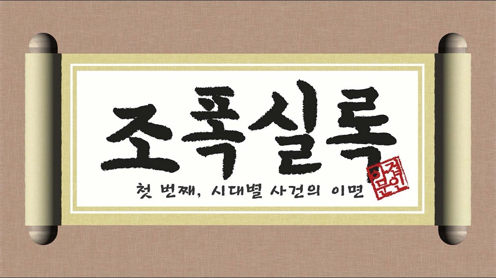

말맛은 살리고,지루함은 덜어내는 편집.
예능·토크 롱폼과 숏폼을 함께 만들어 온 영상 편집자 서이솔입니다.
예능·토크 롱폼과 숏폼을 함께 만들어 온 영상 편집자 서이솔입니다.
예능 채널 10개월 운영하며 170편 업로드,
롱폼마다 하이라이트 숏폼을 추출하여 업로드.
롱폼을 숏폼 구조로 다시 짠 영상 1만 회+
프리랜서 1년: 채널에서 받은 촬영본으로 구성·컷 편집.
다른 사람이 찍은 촬영본으로 여행 시리즈 3편 편집.
MBC 예능 1부 FD (1년): 송출까지의 내부 진행 핸들링
〈놀면 뭐하니?〉 1~33화
〈구해줘! 홈즈〉 1~4화
낚시 입문 브랜드 채널. 출연자 리액션과 상황극 중심의 롱폼을 편집하고, 회차마다 하이라이트 숏폼을 따로 뽑아 10개월 동안 170편을 업로드 주기에 맞춰 제작.
스타트업 직원들이 직접 출연하여 스타트업은 무슨 일을 하고, 스타트업 대표는 어떤 생각을 하는지 솔직하게 드러내는 회사 브이로그.
롱폼 편집 후, 후킹 장면을 맨 앞에 두고 결말을 앞으로 당겨 끝까지 보게 만드는 구조로 숏폼을 재구성함.

숏폼 1만 회 이상 조회
제 2의 인생을 준비하는 사람들에게 제 2의 인생을 살아가는 사람들의 진솔한 이야기를 나누는 인터뷰.
긴 대화에서 흐름을 살릴 부분만 남기고, 썸네일과 자막·화면 디자인을 새로 정리(리뉴얼).
하동의 숙소를 한 곳씩 소개하는 여행 시리즈.
직접 찍은 2편과 팀장이 찍은 3편을 모두 편집하고, 숙소마다 분위기가 다르게 읽히도록 컷 호흡과 자막을 맞춤.

촬영 소스를 받아 편집을 맡은 프리랜서 작업.
출연자가 이야기를 이끄는 가십·뉴스 토크 〈아문〉과, 한국 조폭의 역사를 소개하는 〈조폭실록〉 시리즈를 편집.




 서이솔
서이솔